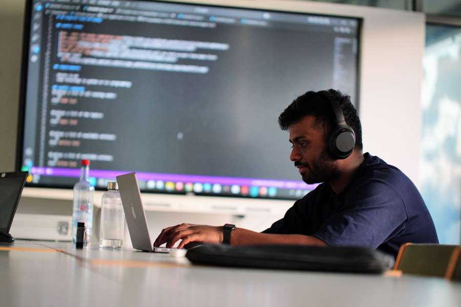

New Application
The dealer enters the details, gets a quote and applies for an extended-warranty contract.
Entry conditions decide the path
Happy path
Goodwill path 1
Goodwill path 2
Ijaaz Muhammed Mullamangalam. Product and Requirements professional with experience taking insurance products from requirements through refinement, testing and release at Mercedes-Benz Insurance Services. Previously worked in software QA for London Stock Exchange Group at Cognizant.

A web-based point-of-sale platform used by dealership staff across international markets to sell and manage extended-warranty contracts. The platform was designed for roughly 240,000 contracts per year. I worked in the product area during the transition from an externally provided sales solution to an in-house platform.
The dealer enters the details, gets a quote and applies for an extended-warranty contract.
Extend a contract that is due to expire within the next 60 days.
Change the owner, address or other details, and print the contract.
Dealership staff register a warranty claim.
Mercedes-Benz Insurance Services GmbH · Working Student
Cognizant Technology Solutions · Client: London Stock Exchange Group
ifak Institut für Automation und Kommunikation e.V. · ITEA GENIUS project
Mini case studies from the extended-warranty platform.
Software requirements often depend on other requirements, but those relationships can be missing, outdated or never documented. I proposed the research question after seeing how difficult it can be to maintain relationships between changing software requirements in practice: can AI reliably surface those missing connections, and where does it fail?
I turned that into a measurable traceability task and rebuilt the benchmark from raw Jira data across eight open-source projects. The final evaluation contained 42,012 requirement pairs, including 10,503 verified links and 31,509 hard negatives chosen to make the task realistically difficult.
requirement pairs: 10,503 verified links, 31,509 hard negatives
Six SAP S/4HANA and SAP Datasphere datasets combined in BigQuery with Python and Google Maps APIs. A BigQuery ML forecast put the annual running cost of a Garbsen branch at about EUR 153,900, against about EUR 165,400 in recurring travel and hotel costs.
View on GitHub ↗A broad congestion problem turned into requirements and measurable scenarios in AnyLogic; four alternatives compared with confidence intervals.
View on GitHub ↗Robot control in MicroPython, built in sprints with iterative testing.
View on GitHub ↗Goals, matches, attendance, hosts and winners across World Cup history.
View on GitHub ↗A Tableau dashboard of UEFA Champions League statistics.
View on GitHub ↗Available to start immediately and open to relocation within Germany.